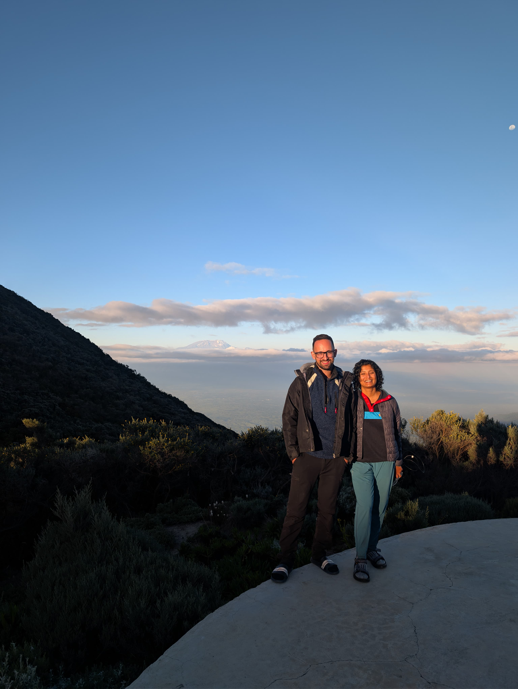
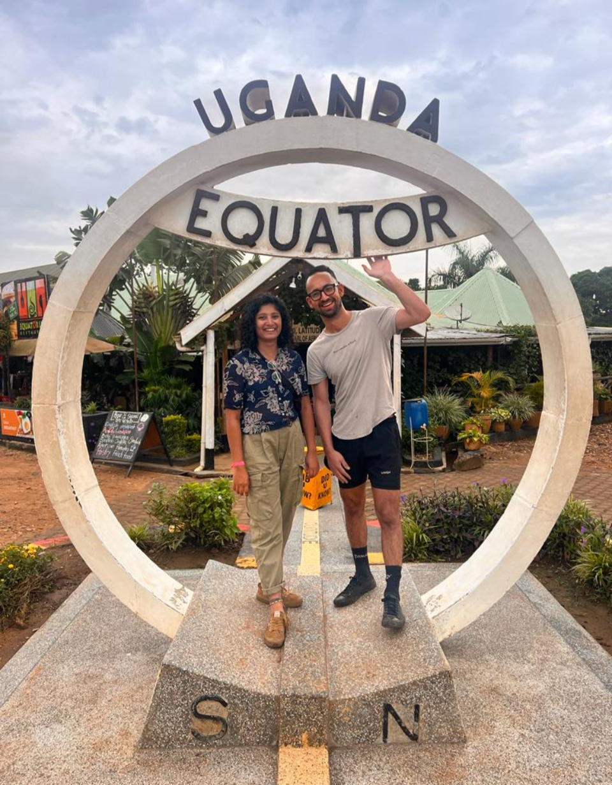
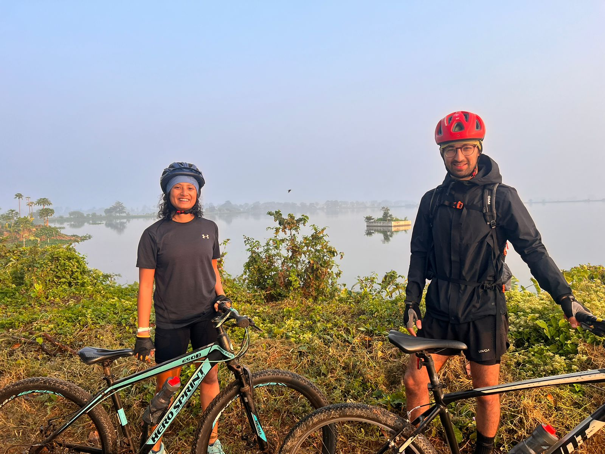
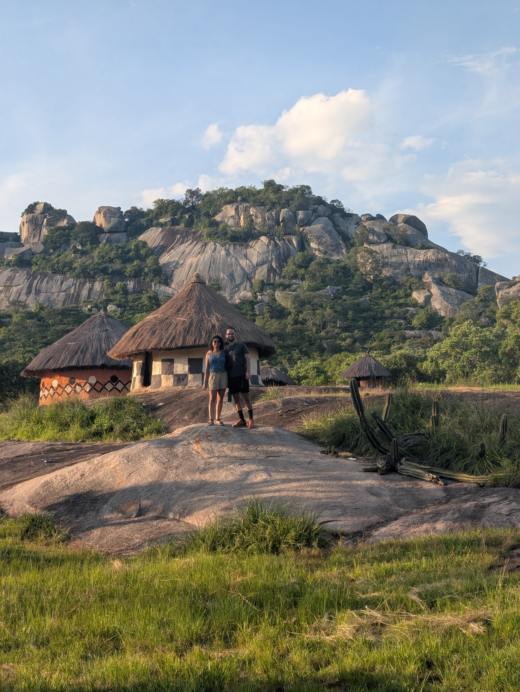

Friends first


From Timor-Leste to Kenya
We met while working together in Timor-Leste in 2015 — a tiny island nation in Southeast Asia. It started with a run: Josh tried to introduce himself to Prerna mid-jog, while she was too out of breath (and not particularly interested in conversation) to respond. That first meeting turned into a real friendship, one that stretched across continents as Prerna headed off to graduate school in North Carolina and Josh started work in London.
Prerna ended up doing her MBA in the UK in 2018, which meant a lot more adventures together. Then came the quieter months of COVID, filled with all kinds of activities that felt perfectly normal at the time — bread baking, at-home wine tastings, long walks and bike rides. Somewhere in the middle of it all, we realized this was more than friendship.
Around the same time, we also realized neither of us wanted to stay in the UK forever. We started dreaming about a next destination — one with better weather, for starters, but really, one that could bring us closer to the adventurous life we wanted to build together. Enter Kenya.
Our Home in East Africa
Why not? But in all seriousness — we were drawn by the exciting opportunities popping up across East Africa, and had heard Nairobi was an incredible city to call home. Having both lived in Asia, we were ready to try a new continent. Somehow, we landed job offers within a week of each other, packed our bags, and moved to Nairobi in 2023.
We've loved every bit of our time here, and we can't wait for you to experience some of what makes this country so special. Kenya has it all — stunning coastlines, epic hikes (including Africa's second-highest peak), incredible wildlife, and a vibrant capital city. What started as "let's see how it goes" has become home, and a life we both love. We're so excited to share it with you.
Adventures together



